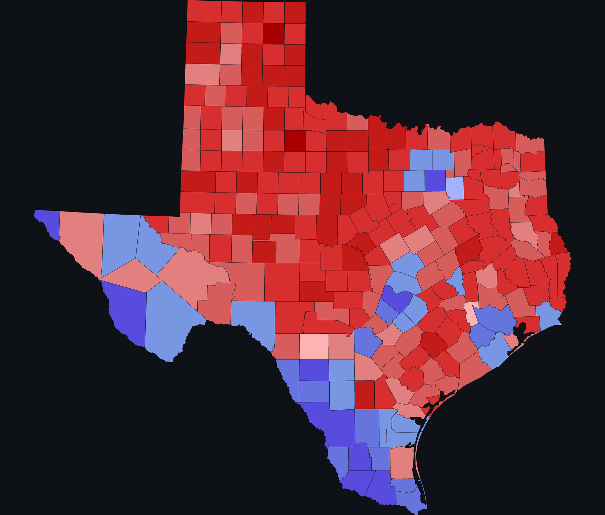
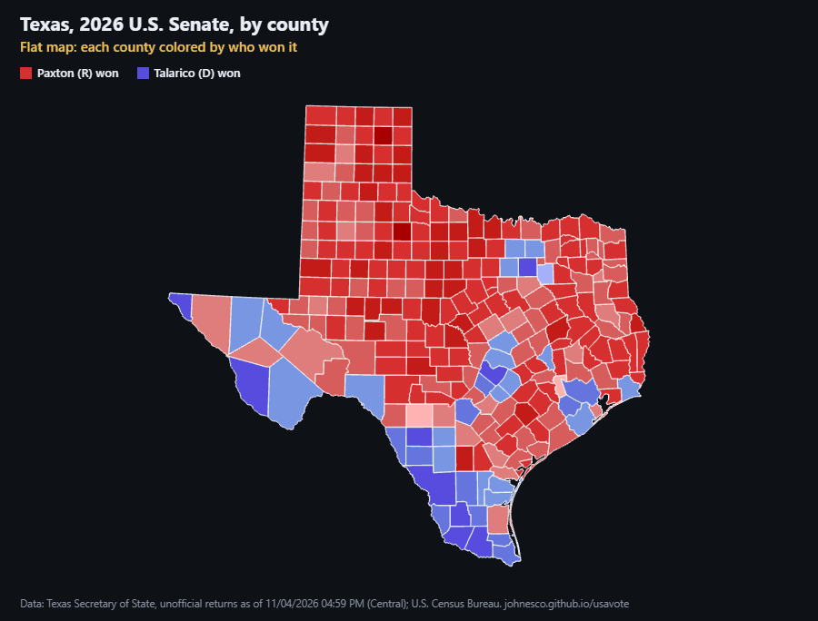
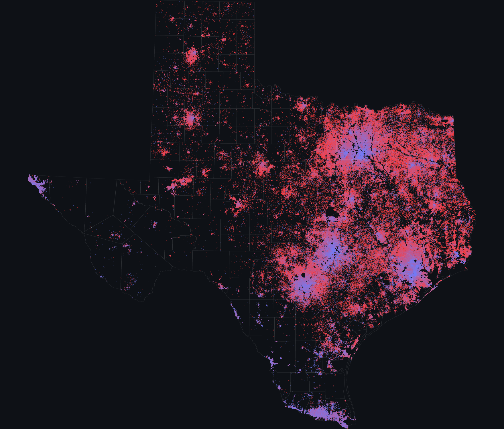
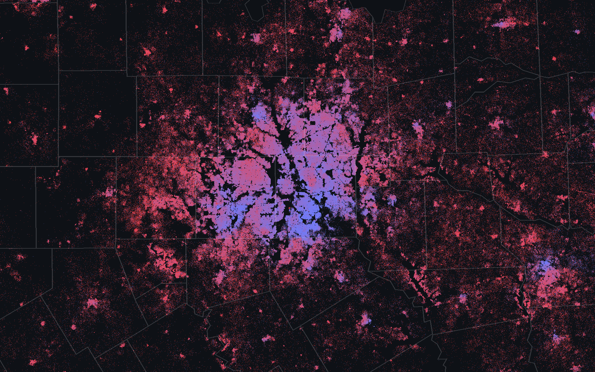

On Nov. 3, 2026, Texas elected a U.S. senator. The Democrat won, by a clear margin. Yet the map most people saw that night was almost entirely red.
Nothing on that map was wrong. It just answers a different question: who won each piece of land, not how many people voted. This site was made to draw the same results in ways that count people.
The typical county-by-county color coding. Whether a county has 100 votes or 1 million doesn't affect its color.
Most of the map is red because most of the land is in counties the Republican won.

Let's add a dimension to see how many votes each county cast, and how they were split.
Each county rises into a column as tall as its vote count, stacked by candidate. The red plains stay flat and the cities tower.
Open the 3D view →
Taken down to the resolution of one dot per person, the density is so vast you can't see it clearly from afar.
So the dot view is built for zooming. From high up, the cities glow; up close, each one resolves into neighborhoods, and every dot is one voter.
Dot positions are an estimate, not a record of anyone's vote: ballots are secret.
Open the dot view and zoom in →
